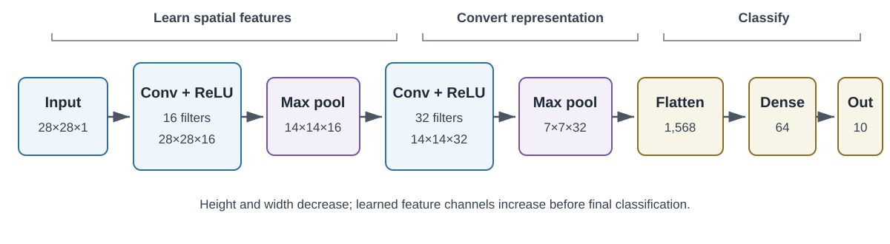

10 Convolutional Neural Networks: Learning Spatial Structure
An image is numerical data, but it is not merely a list of numbers. A pixel’s meaning depends partly on the pixels around it. A short dark stroke beside another short dark stroke may form a corner; several corners may form a digit; and several parts may form an object. A useful image model should preserve this spatial structure long enough to learn from it.
The classification chapter introduced multilayer neural networks as nonlinear classifiers. This chapter changes the architecture of that network to match image data. A convolutional neural network (CNN) uses small, shared sets of weights to find local patterns wherever they occur. The same ideas apply to other grid-like data, but images provide the clearest introduction.
By the end of the chapter, you should be able to:
- explain why immediately flattening an image discards useful assumptions;
- calculate a two-dimensional cross-correlation with a small kernel;
- track height, width, and channels through convolution and pooling layers;
- calculate output sizes and parameter counts; and
- explain what a CNN learns and how its learned features support classification.
10.1 Why Image Structure Changes the Model
Consider an MNIST image: a \(28\times28\) grid of grayscale values. A multilayer perceptron (MLP) reshapes that grid into a vector of length \(784\) before applying a dense layer. This is a valid baseline, but the reshaping removes the model’s direct knowledge that two values were neighbors in the original image.
Flattening does not erase pixel values. It erases the geometry encoded by their arrangement. The dense layer can still learn spatial relations, but it must learn each relation through separate weights. A stroke near the upper-left and the same stroke near the lower-right reach different input positions and therefore different weights.
A CNN introduces two useful assumptions:
- Locality. Nearby values are especially likely to form a meaningful pattern, so an early unit can examine a small neighborhood instead of the entire image.
- Weight sharing. A useful pattern can matter in more than one location, so the same detector can scan across the image.
These assumptions are an inductive bias: a deliberate restriction that helps the learner when it agrees with the data. A dense network asks, “Which input position connects to which hidden unit?” A convolutional layer asks, “Does this small pattern occur here?” CNNs were developed into effective systems for handwritten-document recognition well before the present deep-learning era (LeCun et al. 1998), and locality and weight sharing remain their defining ideas (Zhang et al. 2023).
Establish the comparison point in Lab: MNIST with an MLP, then explain what information the flattening step retains and what structural assumption it removes.
10.2 Images as Tensors
We will describe shapes in channels-last order because that is the default in the accompanying Keras labs:
| Object | One example | A batch of \(B\) examples |
|---|---|---|
| Grayscale image | \(H\times W\times1\) | \(B\times H\times W\times1\) |
| RGB color image | \(H\times W\times3\) | \(B\times H\times W\times3\) |
| Feature maps inside a CNN | \(H\times W\times C\) | \(B\times H\times W\times C\) |
Here \(H\) is height, \(W\) is width, and \(C\) is the number of channels. The batch axis says how many examples are processed together; it does not describe one image.
The word channel needs care. An RGB image has three input channels because each pixel has red, green, and blue values. A convolutional layer may produce dozens of output channels, each recording the response of a different learned filter. Channels coexist within one layer; they are not separate network layers.
For MNIST, one raw example has shape \(28\times28\). We explicitly add a channel axis to obtain \(28\times28\times1\). The numerical values have not changed; the shape now states that there is one value at each spatial position.
Use Practice 10: Convolutional Neural Networks to diagnose several common shape errors before a framework reports them.
10.3 A Kernel as a Small Shared Detector
A kernel or filter is a small array of weights. It moves across an input, one local window at a time. At each location, we multiply corresponding input and kernel entries and add the products. The resulting number reports how strongly that local window matches the kernel.
For a single-channel input \(\mathbf{X}\) and a kernel \(\mathbf{K}\), the operation used by most deep-learning libraries is
\[ Y_{i,j}=b+\sum_{u=0}^{K_h-1}\sum_{v=0}^{K_w-1} K_{u,v}X_{i+u,j+v}, \tag{10.1}\]
where \(b\) is a learned bias. Strict mathematical convolution flips the kernel before sliding it. Equation Equation 10.1 does not, so it is formally cross-correlation. Deep-learning practice nevertheless calls the layer a convolutional layer. Because its weights are learned, the distinction does not limit what pattern the layer can learn.
10.3.1 A Complete Small Example
Let the \(4\times4\) input be
\[ \mathbf{X}=\begin{bmatrix} 1&1&0&0\\ 1&1&0&0\\ 1&1&0&0\\ 1&1&0&0 \end{bmatrix}, \qquad \mathbf{K}=\begin{bmatrix} 1&-1\\ 1&-1 \end{bmatrix}. \]
The kernel gives a large positive response where a light region changes to a dark region from left to right. At the first position, the window is all ones, so the response is
\[1(1)+1(-1)+1(1)+1(-1)=0.\]
One step to the right, the window crosses the boundary:
\[1(1)+0(-1)+1(1)+0(-1)=2.\]
Sliding over every valid position produces the feature map
\[ \mathbf{Y}=\begin{bmatrix} 0&2&0\\ 0&2&0\\ 0&2&0 \end{bmatrix}. \]
The vertical line of twos marks the detected boundary. Notice the economy: the same four weights were used at all nine output positions. In a trained CNN we usually do not hand-design these values. Backpropagation adjusts them to reduce the task loss, just as it adjusts dense-layer weights. An activation such as ReLU, \(\max(0,Y_{i,j})\), is then commonly applied to introduce nonlinearity.
Reproduce every number, alter the input and filter, and write a general NumPy implementation in Lab: CNN Concepts.
10.4 Padding, Stride, and Output Size
Three choices determine how the kernel moves and how large the feature map is:
- Kernel size \((K_h,K_w)\) controls the local window.
- Padding \((P_h,P_w)\) adds values—usually zeros—around the boundary.
- Stride \((S_h,S_w)\) controls how many positions the window moves at a time.
With unit dilation, the output height and width are
\[ H_{out}=\left\lfloor\frac{H+2P_h-K_h}{S_h}\right\rfloor+1, \qquad W_{out}=\left\lfloor\frac{W+2P_w-K_w}{S_w}\right\rfloor+1. \tag{10.2}\]
For a \(28\times28\) image, a \(3\times3\) kernel, no padding, and stride \(1\), the result is \(26\times26\). Adding one row or column of padding on each side gives \(28\times28\). Frameworks call these choices padding="valid" and padding="same", respectively, when stride is one.
A larger stride reduces resolution because the layer visits fewer windows. For the same \(28\times28\) input, \(3\times3\) kernel, padding \(1\), and stride \(2\), Equation Equation 10.2 gives \(14\times14\). This reduction saves computation, but it also discards spatial detail. Output-shape arithmetic is therefore part of model design, not merely bookkeeping.
Predict the output before running the code in Lab: CNN Concepts, then use assertions to check the formula.
10.5 From One Channel to Many Features
A filter must span all input channels. For an input with \(C_{in}\) channels, one filter has shape \(K_h\times K_w\times C_{in}\). Its responses across those channels are summed, so one filter produces one two-dimensional feature map. Using \(C_{out}\) different filters produces \(C_{out}\) output channels:
\[ Y_{i,j,d}=b_d+ \sum_{u=0}^{K_h-1}\sum_{v=0}^{K_w-1}\sum_{c=0}^{C_{in}-1} K_{u,v,c,d}X_{i+u,j+v,c}. \tag{10.3}\]
The full kernel bank therefore has shape \(K_h\times K_w\times C_{in}\times C_{out}\). Including one bias for each output channel, its parameter count is
\[ (K_hK_wC_{in}+1)C_{out}. \tag{10.4}\]
Suppose a \(28\times28\times1\) image enters a layer with 16 same-padded \(3\times3\) filters. The output is \(28\times28\times16\), and the layer learns \((3\cdot3\cdot1+1)16=160\) parameters. A following layer with 32 filters sees all 16 incoming feature maps. Its output has 32 channels, and it learns \((3\cdot3\cdot16+1)32=4,640\) parameters.
This resolves a common confusion:
- the number of input channels determines each filter’s depth;
- the number of filters determines the number of output channels; and
- the number of layers tells us how many transformations are composed.
Stack channels and filter banks explicitly in Lab: CNN Concepts, then verify the parameter count against a Keras model summary.
10.6 Pooling and Growing Receptive Fields
A pooling layer summarizes each local window without learning kernel weights. Max pooling keeps the largest activation; average pooling keeps the mean. With a \(2\times2\) window and stride \(2\), a \(28\times28\) feature map becomes \(14\times14\).
Pooling has two practical effects. It lowers the cost of later layers, and it makes their representations less sensitive to small changes in feature location. This is useful stability, but it is not perfect invariance: moving or changing an input can still change the result, especially near a pooling boundary. Aggressive pooling can also erase small but important details.
The receptive field of an activation is the region of the original input that could affect it. One \(3\times3\) layer sees a \(3\times3\) neighborhood. Two stride-one \(3\times3\) layers compose information from a \(5\times5\) region. Deeper layers can therefore combine short strokes into corners, corners into parts, and parts into larger patterns. This hierarchy is the main conceptual reason to stack convolutional layers.
Compare convolution and max pooling on the same feature map in Lab: CNN Concepts, including a case where pooling removes useful detail.
10.7 From Feature Maps to a Class Prediction
A small image classifier usually has two conceptual blocks:
- a feature extractor made of convolution, activation, and downsampling;
- a classification head that converts the learned representation into class scores.
The following compact MNIST model will be used in the companion labs. same padding keeps the spatial size during convolution, and each \(2\times2\) pooling layer halves it.

| Stage | Output shape | Trainable parameters |
|---|---|---|
| Input | \(28\times28\times1\) | 0 |
| 16 filters, \(3\times3\), ReLU | \(28\times28\times16\) | 160 |
| Max pool, \(2\times2\) | \(14\times14\times16\) | 0 |
| 32 filters, \(3\times3\), ReLU | \(14\times14\times32\) | 4,640 |
| Max pool, \(2\times2\) | \(7\times7\times32\) | 0 |
| Flatten | 1,568 | 0 |
| Dense, 64 units, ReLU | 64 | 100,416 |
| Dense, 10 units, softmax | 10 | 650 |
| Total | 105,866 |
The final dense layer produces one score per digit. Softmax converts the scores to a probability distribution, and multiclass cross-entropy measures the loss. Backpropagation carries the resulting error through the dense head and the convolutional feature extractor. Thus a filter is not rewarded for looking like an edge detector; it is rewarded when its responses help the whole model predict the correct label.
The corresponding MLP lab uses \(784\rightarrow128\rightarrow64\rightarrow10\), or 109,386 parameters. The two models are similar in size. If their behavior differs, the comparison highlights architectural bias rather than simply giving one model a much larger parameter budget.
Dropout, early stopping, and validation curves help diagnose overfitting, but they do not replace a final evaluation on untouched test data. These issues are developed further in Generalization, Model Selection, and Fit.
Train both models under a shared protocol in Lab: MNIST with an MLP and Lab: MNIST with a CNN, then compare accuracy, parameter count, learning curves, errors, and training cost.
10.8 Looking Inside—and Knowing the Limits
The output of each filter is observable. We can pass an image through a trained model and plot selected feature maps. Early maps often respond to simple local changes; deeper maps combine earlier responses and are harder to name. Such plots are useful evidence about model behavior, but a bright activation is not automatically a human-interpretable explanation.
CNNs are also not universally appropriate. Their local, shared filters work well when the same kind of nearby pattern can matter across locations. They are less natural when every feature position has a permanently different meaning, as in some tabular problems. Standard convolution is translation equivariant: shifting an input tends to shift its feature map. Pooling and final aggregation may add some stability, but the complete classifier is not guaranteed to ignore all translations, rotations, scale changes, or background shifts.
Useful extensions include data augmentation, residual connections, and transfer learning from a pretrained feature extractor. These can greatly expand a CNN’s reach, but they do not change the central lesson of this chapter: architecture encodes assumptions about the structure of the data.
Inspect learned kernels, intermediate feature maps, and representative mistakes in Lab: MNIST with a CNN. State what each visualization supports—and what it does not prove.
10.9 Summary
- An MLP can classify images, but immediate flattening does not directly exploit spatial neighborhoods.
- A convolutional layer applies a small shared kernel across locations. The library operation is usually cross-correlation, though it is called convolution.
- Padding, stride, and kernel size determine spatial output dimensions.
- Each filter spans all input channels and produces one output channel.
- Pooling reduces resolution, while stacked layers grow receptive fields and combine simple local patterns into larger ones.
- CNN filters are learned end to end from the task loss; they are not normally prescribed by hand.
- A fair MLP-versus-CNN comparison controls the data split, training protocol, evaluation procedure, and approximate parameter budget.
10.10 Exercises
- Apply the kernel in Section 10.3.1 after transposing only the input. Then transpose only the kernel. Explain why these are different experiments.
- Find the output shape for a \(32\times32\times3\) input, 24 filters of size \(5\times5\), padding 2, and stride 2. Count the trainable parameters.
- A layer receives 12 input channels and produces 20 output channels. How many separate two-dimensional kernel slices are learned for a \(3\times3\) layer?
- Compare two successive \(3\times3\) stride-one convolutions with one \(5\times5\) convolution. What receptive field do they share, and how do their nonlinearities and parameter counts differ?
- Give one task for which translation equivariance is useful and one for which absolute position should matter. Explain how that changes your model design.